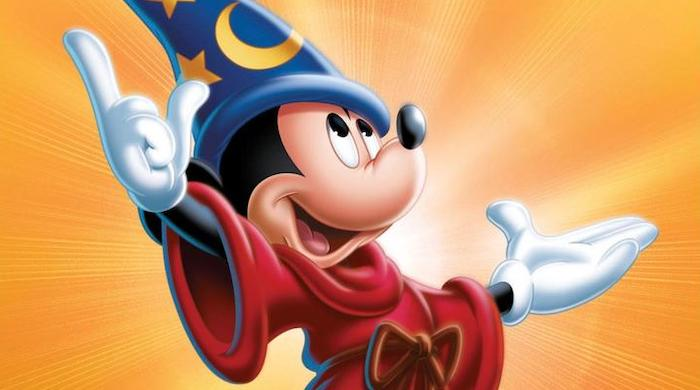

Fantasia

A collection of animated interpretations of great works of Western classical music. Watch Mickey Mouse use it's magical powers to reveal a show of colors and dance.
Storyline
Disney animators set pictures to Western classical music as Leopold Stokowski conducts the Philadelphia Orchestra. "The Sorcerer's Apprentice" features Mickey Mouse as an aspiring magician who oversteps his limits. "The Rite of Spring" tells the story of evolution, from single-celled animals to the death of the dinosaurs. "Dance of the Hours" is a comic ballet performed by ostriches, hippos, elephants, and alligators. "Night on Bald Mountain" and "Ave Maria" set the forces of darkness and light against each other as a devilish revel is interrupted by the coming of a new day.Details
Duration: 2h 5minRelease Date: September 19, 1941 (United States)
Genre: Animation · Family · Fantasy
Directors: James Algar · Samuel Armstrong · Ford Beebe Jr.
Starring: Walt Disney (as Mickey) · Leopold Stokowski · Deems Taylor